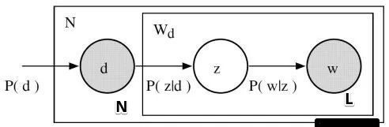

概率潜在语义分析(probabilistic latent semantic analysis,PLSA)，也称概率潜在语义索引(PLSI)，是一种利用概率生成模型对文本集合进行话题分析的无监督学习方法。
模型的最大特点是用隐变量表示话题。整个模型表示文本生成话题，话题生成单词，从而得到单词-文本共现矩阵的过程。这里自然而然的就可以想到使用EM算法求解这类问题了。
假设每个文本由一个话题分布决定，每个话题由一个单词分布决定。
概率潜在语义分析模型
概率潜在语义分析模型有生成模型，以及等价的共现模型。
基本想法
给定一个文本集合，每个文本讨论若干个话题，每个话题由若干个单词表示。
对文本集合进行概率潜在语义分析，就能够发现每个文本的话题，以及每个话题的单词。话题是不能从数据中直接观察到的，是潜在的。
文本数据基于如下的概率模型产生(共现模型)：首先，有话题的概率分布；然后，有话题给定条件下文本的条件概率分布，以及话题给定条件下单词的条件概率分布。概率潜在语义分析就是发现由隐变量表示的话题，即潜在语义。
如下图所示，假设有3个潜在的话题，图中红、绿、蓝框各自表示一个话题：
直观上，语义相近的单词、语义相近的文本会被聚到相同的”软类别”中，即话题所表示的就是这样的软类别。
生成模型
假设有单词集合，其中M是单词个数；文本(指标)集合，其中N是文本个数；话题集合，其中K是预先设定的话题个数。随机变量w取值于单词集合；随机变量d取值于文本集合，随机变量z取值于话题集合。
概率分布P(d)、条件概率分布P(z|d)、条件概率分布P(w|z)皆属于多项式分布，其中P(d)表示生成文本d的概率，P(z|d)表示文本d生成话题z的概率，P(w|z)表示话题z生成单词w的概率。
每个文本d拥有自己的话题概率分布P(z|d)，每个话题z拥有自己的单词概率分布P(w|z)；也就是说一个文本的内容由其相关话题决定，一个话题的内容由其相关单词决定。
生成模型通过以下步骤生成文本-单词共现数据：
- 依据概率分布P(d)，从文本集合中随机选取一个文本d，共生成N个文本；针对每个文本执行以下操作：
- 在文本d给定条件下，依据条件概率分布P(z|d)，从话题集合随机选取一个话题z，共生成L个话题，这里L是文本长度。
- 在话题z的给定条件下，依据条件概率分布P(w|z)，从单词集合中随机选取一个单词w
为了叙述方便，这里假设文本是等长度的。
生成模型中，单词变量w与文本变量d是观测变量，话题变量z是隐变量。
从数据的生成过程可以推出，文本-单词共现数据T的生成概率为所有单词-文本对(w,d)的生成概率的乘积，(似然函数)
这里n(w,d)表示(w,d)出现次数，单词-文本对出现的总次数是NxL。每个单词-文本对(w,d)的生成概率由以下公式决定：
式(18-2)即生成模型的定义。
假设生成模型在话题z给定条件下，单词w与文本d条件独立，即
生成模型属于概率有向图模型，可以用有向图表示，如下图所示：

图中实心圆d，w表示观测变量，空心圆z表示隐变量，箭头表示概率依存关系，方框表示多次重复，方块内的数字N,L分别表示重复次数。
共现模型
可以定义与以上的生成模型等价的共现模型。
文本-单词共现数据T的生成概率为所有单词-文本对(w,d)的生成概率的乘积：
每个单词-文本对(w,d)的概率由以下公式决定：
式(18-5)即共现模型的定义。因此，生成模型(18-2)和共现模型(18-5)是等价的。
共现模型假设在话题z给定条件下，单词w与文本d是条件独立的，即：
如下图所示为共现模型：
图中文本变量d是一个观测变量，单词变量w是一个观测变量，话题变量z是一个隐变量。
生成模型刻画文本-单词共现数据生成的过程。式(18-2)中单词变量w与文本变量d是非对称的。
共现模型描述文本-单词共现数据拥有的模式。式(18-5)中单词变量w与文本变量d是对称的。
所以生成模型称为非对称模型，共现模型称为对称模型。由于模型形式不同，其学习算法形式也不同。
模型性质
模型参数
如果直接定义单词与文本的共现概率P(w,d)，模型参数的个数是，其中M是单词数，N是文本数。概率潜在语义分析的生成模型和共现模型的参数个数是，其中K是话题数，且，所以概率潜在语义分析通过话题对数据进行了更简洁的表示，减少了学习过程中过拟合的可能性。
下图显示了文本、话题、单词之间的关系：
模型的几何解释
概率分布P(w|d) 表示文本d生成单词w的概率：
由M维空间的(M-1)单纯形(simplex)中的点表示。
从式(18-2)可知，概率潜在分析模型(生成模型)中的文本概率分布P(w|d)有如下关系成立：
这里概率分布P(w|z)表示话题z生成单词w的概率。
概率分布P(w|z)也存在于M维空间中的(M-1)单纯形之中。
如果有K个话题，那么就有K个概率分布，由(M-1)单纯形上的K个点表示。以这K个点为顶点，构成一个(K-1)单纯形，称为话题单纯形。
话题单纯形是单词单纯形的子单纯形。
从式(18-7)可知，生成模型中文本的分布P(w|d)可以由K个话题的分布的线性组合表示，文本对应的点就在K个话题的点构成的(K-1)话题单纯形中。
与潜在语义分析的关系
概率潜在语义分析模型(共现模型)可以在潜在语义分析的框架下描述。
下图显示潜在语义分析，对单词-文本矩阵进行奇异值分解得到：
共现模型(18-5)也可以表示文三个矩阵乘积的形式：
概率潜在语义分析模型(18-8)中的矩阵和是非负的、规范化的，表示条件概率分布，而潜在语义分析模型中的矩阵U和V是正交的，未必非负，并不表示概率分布。
概率潜在语义分析的算法
本节介绍生成模型学习的EM算法。
EM算法是一种迭代算法，每次迭代包括交替的两步：E步，求期望；就是计算Q函数，即完全数据的对数似然函数对不完全数据的条件分布的期望。M步，求极大；对Q函数极大化，更新参数模型。
可参考第9章内容。
单词集合，其中M是单词个数；文本(指标)集合，其中N是文本个数；话题集合，其中K是预先设定的话题个数。给定单词-文本共现数据，目标是估计概率潜在语义分析模型(生成模型)的参数。如果使用极大似然估计，对数似然函数是：
E步：计算Q函数
Q函数为完全数据的对数似然函数对不完全数据的条件分布的期望。针对概率潜在语义分析的生成模型，Q函数是：
式中表示文本中的单词个数，表示单词在文本中出现的频数。条件概率分布代表不完全数据，是已知变量(需要给出一个初始值)。条件概率分布和的乘积代表完全数据，是未知变量。
由于可以直接从数据中统计得到，因此这里只考了，的估计，可将Q函数简化为函数。
对于函数中的可以根据贝叶斯公式计算：
其中和由上一步迭代得到。
M步：极大化Q函数
通过约束最优化求解Q函数的极大值，这时和是变量。因为变量，形成概率分布，满足约束条件：
应用拉格朗日法，引入拉格朗日乘子和，定义拉格朗日函数：
将拉格朗日函数分别对和求偏导数，并令其为0，从而得到：
同理的，
解方程组得到M步的参数估计公式：
算法18.1(概率潜在语义模型参数估计的EM算法)
输入：设单词集合，其中M是单词个数；文本(指标)集合，其中N是文本个数；话题集合，其中K是预先设定的话题个数。给定单词-文本共现数据。
输出：和。
设置参数和的初始值。
迭代执行以下E步，M步，直到收敛为止：
E步：
M步：